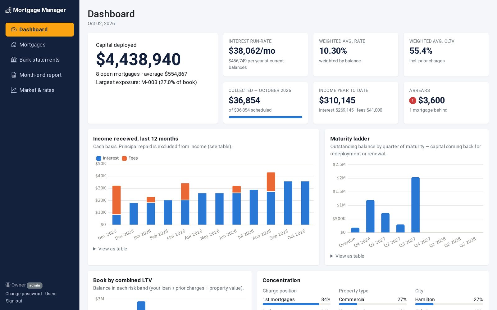

Private Mortgage Manager
A web app for private mortgage lenders. It tracks every loan in the book, matches bank deposits to mortgage payments, follows the rate environment, and produces month-end income reports for the accountant.
- Portfolio dashboard with arrears, a maturity ladder and concentration by property type and city
- Bank reconciliation from CSV, Excel and OFX statements from any Canadian bank
- Month-end Excel reports, role-based access, an audit log, and 78 automated tests in CI
- Python
- Flask
- SQLAlchemy
- PostgreSQL
- Chart.js
- Docker
- GitHub Actions
